岡山牛尽くし
桃とマスカットと吉備団子の岡山である。
宗教的にいえば黒住教や金光教といった新宗教の発祥地、そしてやけに三重の塔がごろごろ転がっているところとして有名な岡山であるが、どういうわけか牛に縁の深いお土地柄でもある。
元々岡山藩が農業振興策として農家に牛を飼う事を奨励したのが始まりかと思われる。
江戸期には農耕牛、明治以降は乳牛、食用牛と岡山と牛は切っても切れない間柄なのだ。
かつて農家では牛正月といって正月には餅に藁を混ぜて牛にふるまったらしい。・・・牛、迷惑じゃないですか？
牛を食用にするようになってからは岡山県内の牛市は全国的にも有名だったそうだ。
さらにこのような牛との付き合いの中から自然と牛信仰が芽生えてくる。その極みが中国山地を中心に広がった件（くだん）信仰である。
・・・これは信仰というよりは一種の都市伝説に近いもので、顔が牛で身体が人間、もしくはその逆の半牛半人伝説である。
言い伝えによれば件が産まれると大きな飢饉や戦争が起こり、それを予言し、実現されると死んでしまう。この話、戦時中辺りまでは件の話は結構真剣に信じられていたらしい。
一説には生後3日で死ぬと伝えられており、じゃあ生後3日で予言するってこと？バカボンのハジメちゃんじゃあないんだから・・・
また、古文書の文末にしばしば使われる「依而如件（よって件のごとし）」という定型文は件は本当の事しか予言しないというところから来ている。
この件信仰はいつから始まったものかは判らないが、小泉八雲や内田百聞の手記にも件の話が登場してくる。
また柳田国男はこの件に興味を示し、備中山地に千葉徳禰なる人物を送り込んだという。
小松左京の「くだんのはは」や近年では岩井志麻子（岡山出身）の「よって件のごとし」なる小説があったりと昔話として片付けるにはあまりにもリアリティがありすぎる話なのだ。
ともかく岡山について調べれば調べる程、牛絡みの話がざくざく出て来る。
こりゃあ、今回の岡山行きのテーマは牛で決まりだな。などと思いつつ岡山に向かったのである。
鼻ぐり塚/岡山県岡山市
吉備路観光といえば吉備津神社に備中国分寺の五重塔と相場が決まっているが何と言っても鼻ぐり塚ほど強烈なところはないだろう。
この鼻ぐり塚は福田海という教団の境内にあるのだが、この福田海という教団自体がユニークなので一寸紹介させていただく。
明治３３年に結成された福田海は墓相学や易学をベースにした教団らしく、無縁墓の整理や清掃を活動の中心としてきた組織である。
現在も福田海本部を訪れると、仏像が安置されている本堂よりも石塔が立ち並ぶ中堂といわれる場所が中心になっている。
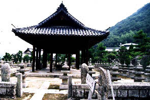
この辺、特定の場所を中心とする天理教など他の新宗教の影響なのだろうか。
その他、境内には風を祀った長床という壁のない能舞台のような建物や屋外の護摩炊きの場所などがあり、いわゆる普通のお寺とはちょっと違い、アウトドア指向の宗教なのかなあ、という印象を持った。
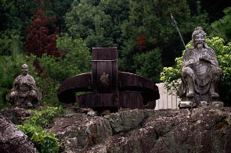
中堂の裏には何故か船の錨が。しかも真中には梵字がきってあるし。
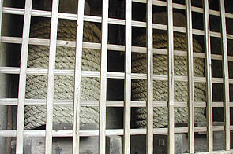 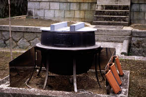
京都、宇治の大塔を直した時の大綱やこの後訪れた吉備津神社の鳴釜にちなんだものだろうか、お釜が置かれてあった。
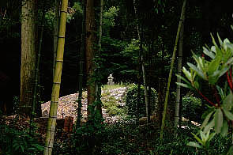
そうこうしている内に竹林の向こうに鼻ぐり塚が見えてきた。想像以上の大きさに一寸ビビる。
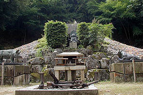
正面である。ごっそり積まれているのはみ〜んな牛の鼻ぐりである。
ジャ〜ン！
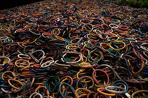 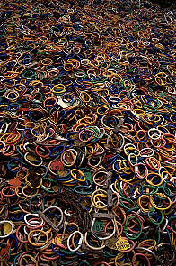 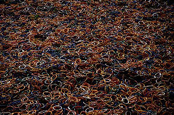
鼻ぐり鼻ぐり鼻グリグリ〜
大正年間から始まったというこの鼻ぐり奉納。牛供養のためのものだが、現在では700万個を数えるという。
様々な色の鼻ぐりがうずたかく積まれているのを至近距離で見ると、これ全部食べられちゃったんだよなあ〜、と思わざるを得ない。
近頃何かと食用牛肉が騒がしいがそれにしても食いに食ったり。この内の鼻ぐり一個分位は食ってるんだろうか、俺。
塚の前には豚と牛のブロンズ像が。
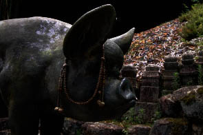 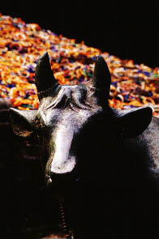
鼻ぐりをよく見てみると中には木が使われている白い鼻ぐりも多い。
これは旧タイプの鼻ぐりで、ここ20年程で現在の色になったそうだ。
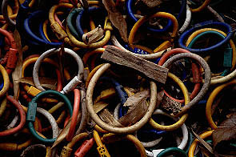
日本すきま漫遊記の「福田海」の項にかつてウルトラマンエースに鼻ぐり塚が登場したというくだりがあったので見てみたのだが、鼻ぐりを盗んだ蟹江敬三（若い！）が牛怪獣に変わってしまうという話で、何故か牛窓のオリーブ園が出てきたり、火曜サスペンスの★★湯けむり殺人事件〜平和な温泉街に起こった事件！花嫁の怨念がこもる温泉トリック！みたいな観光地タイアップ臭が漂う内容だったが、肝心の鼻ぐり塚はこんな派手な色ではなくて真鍮製のもっと地味〜なものだった。それでも規模としては現在のモノとほぼ変わらず充分迫力はあったけど。ちなみにエースの中では怪獣を鎮めるべく鼻ぐり塚の前でお焚きあげをやっているが恐らく福田海の大祭か何かの映像をそのまま使っているのだろう。修験道のような格好をしている人達が鼻ぐり塚の前で拝んでいる映像はコドモ番組の域を越えてて凄かったです。
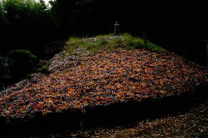
左側から見た図。塚は斜面にあって周りは小さな五輪塔が並んでおり鼻ぐりの洪水をせき止めている。また塚を一周するように西国三十三観音像が置かれている。
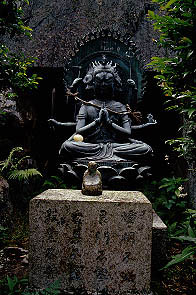
塚の中央部分。この後ろに古墳の横穴がある。中には真鍮製の鼻ぐりを溶かした金属板が。
炎天下の中、作業員の方々が何故か竹を燃やしていてお焚きあげもビックリのでかい焚き火をやっていて、時々竹の破裂する爆音が響き渡り天には煤が舞い上がり、かなりシュールな雰囲気での参拝でした。
近くに駐車しておいた車が煤まみれになってました・・・
吉備津神社/岡山県岡山市
鼻ぐり塚の近くにある吉備津神社。ちなみに近くには吉備津彦神社という神社がある。
お互いに桃太郎のルーツといわれる吉備津彦命を祀っているので紛らわしい。
そういえば桃太郎の本拠地としてここ岡山と香川は激しいバトルを繰り広げており、それに愛知の犬山まで名乗りをあげたりして桃太郎界は混然とした状況をていしているが、そんなに欲しいか、桃太郎権。
さて、その吉備津神社だが「彦」の方がいかにも整然とした神社であるのにたいして、こちらはあちらこちらに「珍」な香りを漂わせている。
吉備津造の本殿なんかは国宝だったりして結構渋い雰囲気なのだが、その脇にはこんな素敵過ぎるおみくじが。
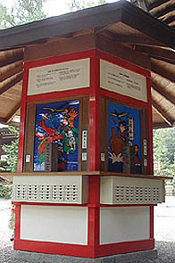 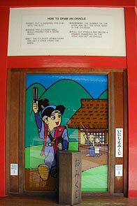 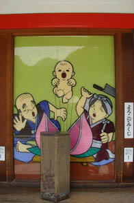
六角おみくじである。その他外国人用の英語みくじやオールひらがなのこどもみくじなども。桃太郎魂全開です。
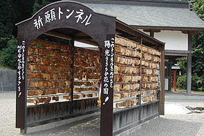 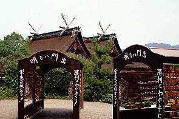
本殿の裏手には絵馬のトンネルが。絵馬は勿論桃太郎。
それにしてもなんと品の無いトンネルだろうか。後ろで国宝の本殿が泣いてます。
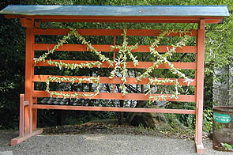 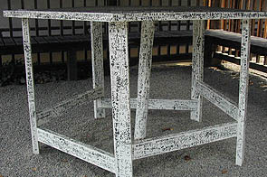
おみくじを縛り付けて「合格」。何故かテーブルにはおびただしい落書き。
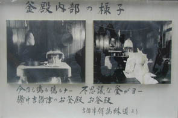
さて、本殿の右奥には長〜い回廊があってその途中にお釜殿なる建物がある。
これは鳴釜神事という一種の占いを行うところで竈に釜が置かれている。この釜を加熱する事で鳴る共鳴音のようなもので吉凶を占うという。
内部は煤で真っ黒になっている。
お釜殿の脇で休んでいると鳴釜神事が始まった。
暫くするとお釜殿の中からブゥぅお〜んという音がしてきた。想像していたよりもかなり大きなサウンドで建物全体が共鳴して振動している位。
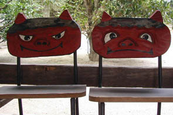
こんな椅子に座って鳴釜の音を聞いてました。
このお釜殿は桃太郎（吉備津彦命）に成敗された鬼（この地方の豪族の温羅）の首を祀ってあるところだそうだ。
牛窓/岡山県牛窓市
瀬戸内航路の風待ち港、牛窓。
その昔、神宮皇后がこの海を通りかかった際、牛鬼に襲われ、住吉大明神がこれを退治し牛鬼が転んだので「牛転び（うしまろび）」、これが転じて「うしまど」になったのだそうだ。ここにも牛信仰の影がちらほら。
で、今村昌平のカンゾー先生のロケ地巡りでもしようかと思ったのだが、あまりの暑さに降参。
冷房の効いてそうな屋内施設に行く事にした。牛窓海洋文化館である。
ここのメイン展示はだんじりと朝鮮通信使。
船のようなだんじりは現物が2点展示されていた。
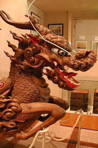 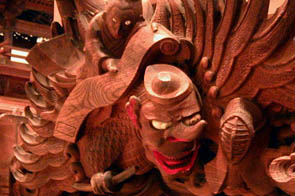
麒麟と天狗である。天狗は何故か外人顔。剣道の面が意味不明でよろしい。
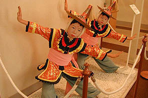
朝鮮通信使の影響を受けた唐子踊りは疫神社で奉納される踊りだという。衣装も凄いが人形の顔が一番印象的でした。
結局街歩きは日が暮れてから歩いたので写真はナシ。渋いトコロでした。
田倉牛神社/岡山県吉永町
備前焼で有名な備前市の北隣、吉永町にある田倉牛神社は「野上牛頭天王宮」との別名を持つ牛を祀る神社である。
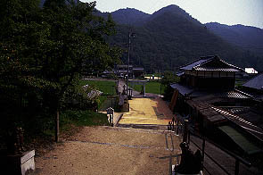
境内から参道を見下ろす。手前左右には備前焼の狛犬。良い雰囲気だ。
この神社には本殿や拝殿といった建物はない。
これが本殿というか牛神社の中心部である。御神体はこの中にある牛の石像である。
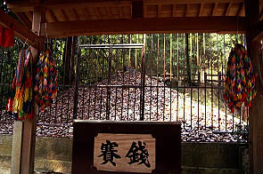
柵に囲まれた場所は小高い山のようになっている。
牛の周りに敷き詰められているのは砂利じゃなくて10センチ程の牛の焼き物である。もちろん備前焼。遠目に見ると砂利の山のようだが一個一個きっちり牛型である。
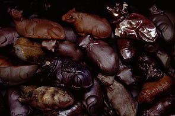 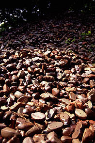 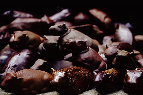
・・・牛だらけである。
よく狛犬代わりに撫で牛という牛像がある神社を見かけるが、それがメインになったようなものなのだろうか？
もともとは農耕神だが今では病気平癒、五穀豊穣を祈念する参詣者が一個持ち帰り、願いが叶うと倍にして返すというシステム。
いつしか奉納された牛型は20万個。こぼれ落ちそうな程、牛であふれている。
牛焼物はいくつかの種類があり、複数の窯で焼かれたのだろうか。
もしかしたらこの地方には牛の焼き物を奉納する神社がここだけでなくたくさんあるのだろうか？？
そいういえば鼻ぐり塚にも牛の焼き物が混ざっていたし。
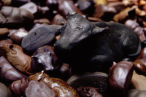 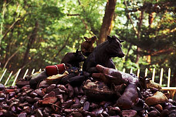
いくら牛と縁の深いお土地柄といえどもこれだけ牛が集まると異様な眺めである。
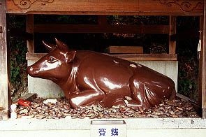 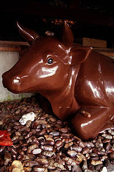
その他、境内には所々牛積みスポットが点在している。
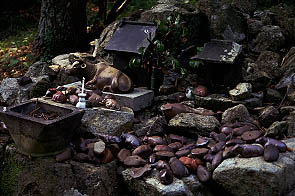 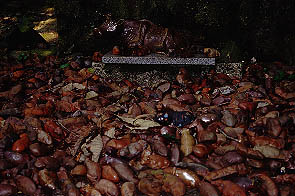
敷地内の牛神会館には中央に牛の像が安置されていた。
牛ヶ首島/香川県直島町
さて、岡山牛ツアーの最後は牛ヶ首島である。
何でもこの牛ヶ首島には巨岩を彫った日蓮聖人の大涅槃像があるという。
ここは瀬戸大橋の近く、岡山県玉野市のすぐ沖にある島だが行政区は香川県の直島町になる。
ところが牛ヶ首島自体が数年前から無人島化してしまい、直島の町役場にも玉野の市役所に聞いても牛ヶ首島の事は今イチ要領を得ない。
こうなったら自分の目で確かめるしかないでしょ、というわけで船で上陸したのだ。
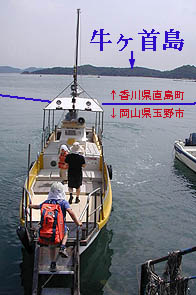
玉野の田井港からは目の前。わずか数分の船旅である。距離にして1キロ位だろうか。
頼りは島の超簡単な地図だけ。港は南端。取り敢えず北に向かって進む。途中、人が住んでいるらしき人家があった。
聞くところによると以前住んでおられた方が別荘としてたまに帰島するそうだ。
涅槃像の場所を聞こうと思ったが留守のようだった。犬小屋に犬はいるのだが。
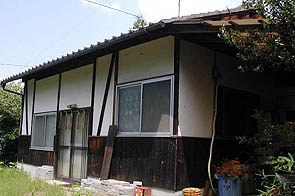
そんなこんなで20分程歩くと寺に着いた。看板を見ると日蓮宗の寺である。無論人はいない。
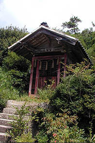 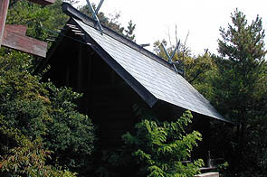
隣には神社と稲荷社がある。
涅槃像、近し！の確信を持って先に進もうとすると・・・
・・・道が木で塞がってました。
仕方なく、海岸沿いに出て浜を歩く。御影石が崩れた岩の浜を歩いていると気分は猿の惑星のラストシーンである。
猿の惑星では砂浜に自由の女神を見つけて絶望していたが、こっちは涅槃像を見つけて歓喜する予定。
途中浜がとぎれている岩の部分は海に落ちそうな際どいところもあったが何とか島の北端まで着いた。
あれっ・・・ない。
事前のリサーチで見た涅槃像の写真からして見落とすレベルの大きさではないはずだ。
かといって、今歩いてきた以外に道はないようだし、一体どういうことなのだろう。ここから先はちょっと海沿いに行けそうもないし、それよりも暑いし疲れちゃったし
・・・さて、と。
探してもないものは仕方ないので船が来るまで海水浴だ〜（何故か水着持参）。
帰りの船で船頭さんに聞いてみた。
「あのう〜日蓮さんの涅槃像なんですけどお〜」
「え、アレ爆破しちゃったぞ」
ガビョーン！
キッツイ岡山弁の船頭さんだったので100％は聞き取れなかったので、正確性を欠くが、この涅槃像を独りで彫っていたおじいさんがある日突然涅槃像を爆破してしまったというのだ。にわかには信じられない話だが。船頭さんはそういっている（多分）。
以下、かなりこちらの岡山弁ヒアリング能力が低いため想像と妄想が半分くらい混じるが御容赦願いたい。
おじいさん、自分が死ぬまでに完成するのがとても無理だと悟ったらしく、いきなり爆破してしまったらしい。
その後、おじいさんは悔いを残しながらなのかそれともさっぱりしたのかは知らないが鬼籍に入る。かなりの高齢だったようだ。
でも・・・
完成しないからといって破壊するだろうか。しかもノミでコツコツ刻むよりも爆破の方が大変じゃなかろうか、高齢なのに。
いずれにしてもこのじいさんの一生の激しさは何だろう。
彫って彫って彫りまくって最後は爆破。あまりにも凄すぎやしませんか。
そんな夢の残骸が下の写真。
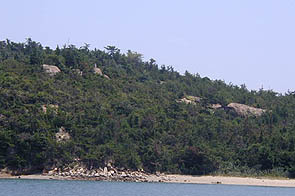 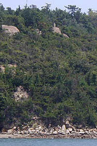
波打ち際に瓦礫がある。その上に石柱が乗っている岩がある。その辺に日蓮さんの顔があったそうだ。残念ながらきれいさっぱりなくなってしまったようだ。
あ、さっき俺が猿の惑星気分に浸ってたトコじゃねえか。
散々探してここまで見事にスかされた物件も珍しい。
やっぱ下調べは大事っつーことですね。
2002.7.
珍寺大道場 HOME